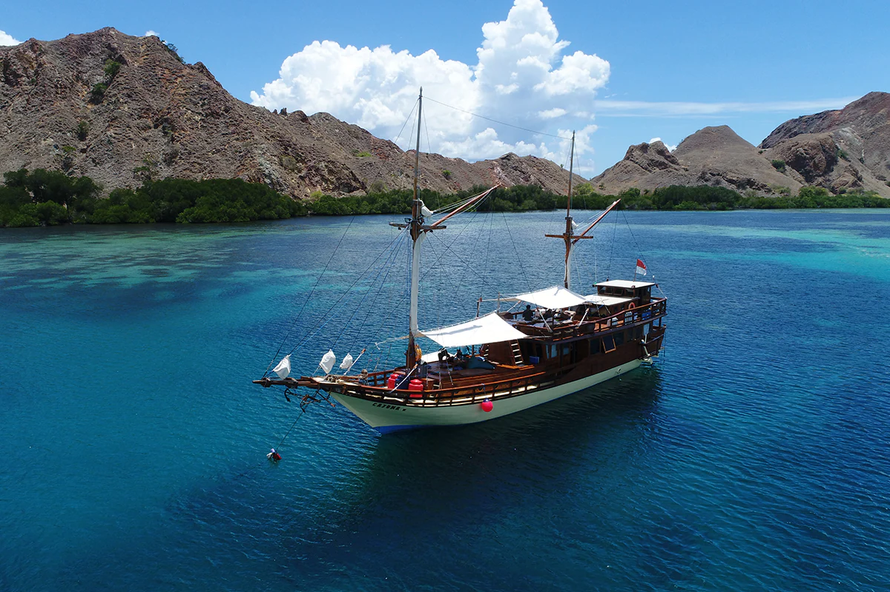

Labuan Bajo, Sepetak Surga yang Terletak di Indonesia Timur
Labuan Bajo merupakan sebuah surga tersembunyi yang ada di Indonesia bagian timur. Desa ini terletak di Kecamatan Komodo, Kabupaten Manggarai Barat, Provinsi Nusa Tenggara Timur yang berbatasan langsung dengan Nusa Tenggara Barat dan dipisahkan oleh Selat Sape. Labuan Bajo adalah salah satu dari lima Destinasi Super Prioritas yang sedang dikembangkan di Indonesia.
Destinasi ini merupakan gerbang menuju Taman Nasional Komodo yang menyimpan keindahan alam yang menakjubkan dan hewan purba yang mendunia. Mulai dari hewan endemik komodo di Pulau Rinca dan Pulau Komodo, deretan pulau eksotis, keragaman hayati bawah laut, hingga pantai aduhai, semua bisa Sobat Pesona temukan dengan memulai perjalanan di Labuan Bajo.
Menikmati pemandangan langit senja juga bisa menjadi cara lain menikmati Labuan Bajo. Spot strategis untuk menikmati keindahan senja ini berada tak jauh dari Bandar Udara Internasional Komodo. Sobat Pesona dapat memilih destinasi Bukit Cinta, Puncak Amelia, dan Puncak Silvia, untuk mengabadikan langit senja yang menentramkan jiwa. Ada juga Gua Rangko yang memiliki pesona bak oasis dengan kolam air asinnya yang begitu menyejukkan.
Kalau Sobat Pesona ingin berpetualang di Labuan Bajo, trekking singkat ke Air Terjun Cunca Wulang bisa jadi pilihan. Jangan lewatkan juga pengalaman seru menjajal live-on-board, yaitu mencoba tinggal di kapal pinisi selama beberapa hari sambil berlayar mengunjungi pulau-pulau yang indah, dan bisa juga menyelam untuk melihat keindahan bawah laut Labuan Bajo yang istimewa.
Selain dari skalanya yang besar, Candi yang sangat legendaris ini tentunya juga menyimpan beragam fakta unik, serta berbagai macam hal menarik yang bisa Sobat Pesona temui saat berkunjung kesini. Sebelum Sobat Pesona beranjak ke Candi Borobudur, simak dulu yuk ulasan lengkapnya di bawah ini!
Gerbang Menuju Surga Dunia
Labuan Bajo dan Taman Nasional Komodo adalah satu entitas yang tidak dapat terpisahkan. Keduanya saling terhubung sehingga ketika Sobat Pesona berada di Labuan Bajo, perlu mengunjungi Taman Nasional Komodo. Untuk mencapai ke sana, Sobat Pesona bisa menggunakan kapal feri atau kapal cepat. Ada banyak pilihan keberangkatan mulai dari pagi hingga sore hari.
Suggested for You

27-10-2023
Candi Borobudur, Pusaka Kolosal Magelang, Jawa Tengah

27-10-2023
Pura ikonik di Danau Beratan di Dataran Tinggi Bedugul
27-10-2023